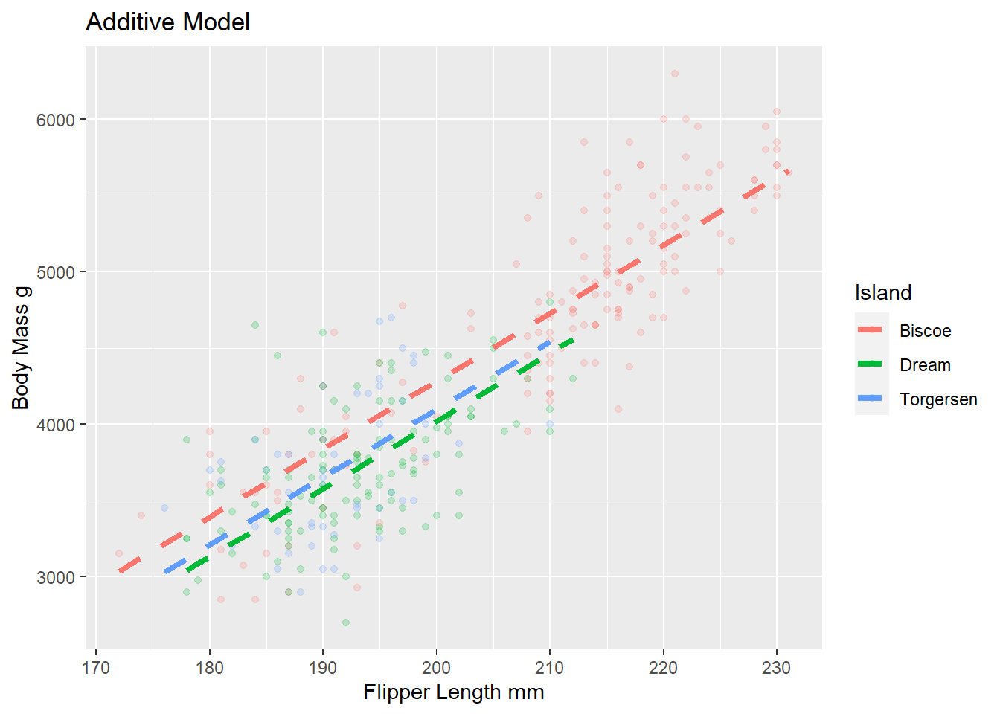

Regression with Multiple Predictors
Today, we will expand our understanding of models by continuing to learn about penguins. In the last class, we modeled body mass by flipper length, and in a separate model, modeled body mass by island. Could it be possible that the estimated body mass of a penguin changes by both their flipper length AND by the island they are on?
Review: Take a glimpse at the data set before we get started. The data set is called penguins.
glimpse(penguins)Rows: 344
Columns: 8
$ species <fct> Adelie, Adelie, Adelie, Adelie, Adelie, Adelie, Adel…
$ island <fct> Torgersen, Torgersen, Torgersen, Torgersen, Torgerse…
$ bill_length_mm <dbl> 39.1, 39.5, 40.3, NA, 36.7, 39.3, 38.9, 39.2, 34.1, …
$ bill_depth_mm <dbl> 18.7, 17.4, 18.0, NA, 19.3, 20.6, 17.8, 19.6, 18.1, …
$ flipper_length_mm <int> 181, 186, 195, NA, 193, 190, 181, 195, 193, 190, 186…
$ body_mass_g <int> 3750, 3800, 3250, NA, 3450, 3650, 3625, 4675, 3475, …
$ sex <fct> male, female, female, NA, female, male, female, male…
$ year <int> 2007, 2007, 2007, 2007, 2007, 2007, 2007, 2007, 2007…Now, fit a model to assess the relationship between our response variable body mass, and our explanatory variables flipper length and island. Produce the summary output. Write out the estimate regression equation below.
linear_reg() |>
set_engine("lm") |>
fit(body_mass_g ~ flipper_length_mm + island, data = penguins) |>
tidy()# A tibble: 4 × 5
term estimate std.error statistic p.value
<chr> <dbl> <dbl> <dbl> <dbl>
1 (Intercept) -4625. 392. -11.8 4.29e-27
2 flipper_length_mm 44.5 1.87 23.9 1.65e-74
3 islandDream -262. 55.0 -4.77 2.75e- 6
4 islandTorgersen -185. 70.3 -2.63 8.84e- 3\[\hat{body.mass = -4625 + 44.5*flipper - 262*Dream - 185* Torgersen}\] \
Dream = 1 if Dream; 0 else \ Torgersen = 1 if Torgersen; 0 else
Is this an additive model or an interaction model? Additive model
Let’s visualize what these estimates represent.
#Code to get predicted values
model1 <- lm(body_mass_g ~ flipper_length_mm + island, data = penguins)
p <- predict(model1)
clean_penguins <- penguins |>
drop_na(flipper_length_mm)
clean_penguins <- cbind(p, clean_penguins)
#Code to visualize model output
clean_penguins |>
ggplot(
aes(x = flipper_length_mm, y = body_mass_g, color = island)
) +
geom_point(alpha = 0.2) +
geom_line(
aes(y = p),
linetype = "dashed",
lwd = 1.5
) +
labs(
x = "Flipper Length mm",
y = "Body Mass g",
title = "Additive Model",
color = "Island")
– Interpret the slope coefficient for flipper length in the context of the problem
For every 1 mm increase in flipper length, we estimate on average a 44.5 g increase in body mass, after holding all other variables constant
– Predict the body mass of a penguin with a flipper length of 200 on the Dream island
\[\hat{body.mass = -4625 + 44.5*200 - 262*1 - 185* 0}\]
Review: Look at the plot you created. What assumption does the additive model make about the slopes between flipper length and body mass for each of the three islands?
The additive model assumes the same slope between body mass and flipper length for all three islands.
Interaciton Model
What changes in the R code when fitting an interaction model instead of an additive model in R? We change the + to a *
– Now fit the interaction model. Display the summary output and write out the estimate regression equation below.
linear_reg() |>
set_engine("lm") |>
fit(body_mass_g ~ flipper_length_mm * island, data = penguins) |>
tidy()# A tibble: 6 × 5
term estimate std.error statistic p.value
<chr> <dbl> <dbl> <dbl> <dbl>
1 (Intercept) -5464. 431. -12.7 2.51e-30
2 flipper_length_mm 48.5 2.05 23.7 1.66e-73
3 islandDream 3551. 969. 3.66 2.89e- 4
4 islandTorgersen 3218. 1680. 1.92 5.62e- 2
5 flipper_length_mm:islandDream -19.4 4.94 -3.93 1.03e- 4
6 flipper_length_mm:islandTorgersen -17.4 8.73 -1.99 4.69e- 2\[\hat{body.mass} = -5464 + 48.5*flipper + 3551*Dream + 3218*Torgersen - 19.4*Dream*flipper - 17.4*Torgersen\*flipper\]
Let’s visualize what these estimates represent.
#Code to get predicted values
model2 <- lm(body_mass_g ~ flipper_length_mm*island, data = penguins)
p2 <- predict(model2)
clean_penguins2 <- penguins |>
drop_na(flipper_length_mm)
clean_penguins <- cbind(p2, clean_penguins)
#Code to visualize model output
clean_penguins2 |>
ggplot(
aes(x = flipper_length_mm, y = body_mass_g, color = island)
) +
geom_point(alpha = 0.2) +
geom_line(
aes(y = p2),
linetype = "dashed",
lwd = 1.5
) +
labs(
x = "Flipper Length mm",
y = "Body Mass g",
title = "Interaction Model",
color = "Island")
– Interpret the interaction term for flipper length and Dream island in the context of the problem.
The rate of change between estimated body mass and flipper length, on average is different between dream island and biscoe island.
– Predict the body mass of a penguin with a flipper length of 200 on the Dream island
\[\hat{body.mass} = -5464 + 48.5*200 + 3551*1 + 3218*0 - 19.4*1*flipper - 17.4*0*200\]
How can we choose?
Occam’s Razor - Don’t overcomplicate the situation. We prefer the simplest best model.
glance(model1)$r.squared[1] 0.7742334glance(model2)$r.squared[1] 0.7857486glance(model1)$adj.r.squared[1] 0.7722296glance(model2)$adj.r.squared[1] 0.7825604– What is R-squared? What is adjusted R-squared?
R-squared is the percent variability in the response that is explained by our model. (Can use when models have same number of variables for model selection)
Adjusted R-squared is similar, but has a penalty for the number of variables in the model. (Should use for model selection when models have different numbers of variables).
Two Quantitative Explanatory Variables
Now, let’s explore body mass, and it’s relationship to bill length and flipper length.
– Brainstorm, how could we visualize this?
Note: This code is beyond the scope of this course!
quanplot <- plot_ly(penguins,
x = ~ flipper_length_mm, y = ~ bill_length_mm, z = ~body_mass_g,
marker = list(size = 3, color = "lightgray" , alpha = 0.5,
line = list(color = "gray" , width = 2))) |>
add_markers() |>
plotly::layout(scene = list(
xaxis = list(title = "Flipper (mm)"),
yaxis = list(title = "Bill (mm)"),
zaxis = list(title = "Body Mass (g)")
)) |>
config(displayModeBar = FALSE)
frameWidget(quanplot)– Fit the additive model below. Interpret the coefficient for flipper in context of the problem.
linear_reg() |>
set_engine("lm") |>
fit(body_mass_g ~ flipper_length_mm + bill_length_mm, data = penguins) |>
tidy()# A tibble: 3 × 5
term estimate std.error statistic p.value
<chr> <dbl> <dbl> <dbl> <dbl>
1 (Intercept) -5737. 308. -18.6 7.80e-54
2 flipper_length_mm 48.1 2.01 23.9 7.56e-75
3 bill_length_mm 6.05 5.18 1.17 2.44e- 1Holding all other variables constant, for every one mm increase in flipper length, we expect on average a 48.1 mm increase in estimated body mass.
What if I want to fit an interaction model with these two quantitative variables?
It looks really similar to what we’ve done before! Try it out!